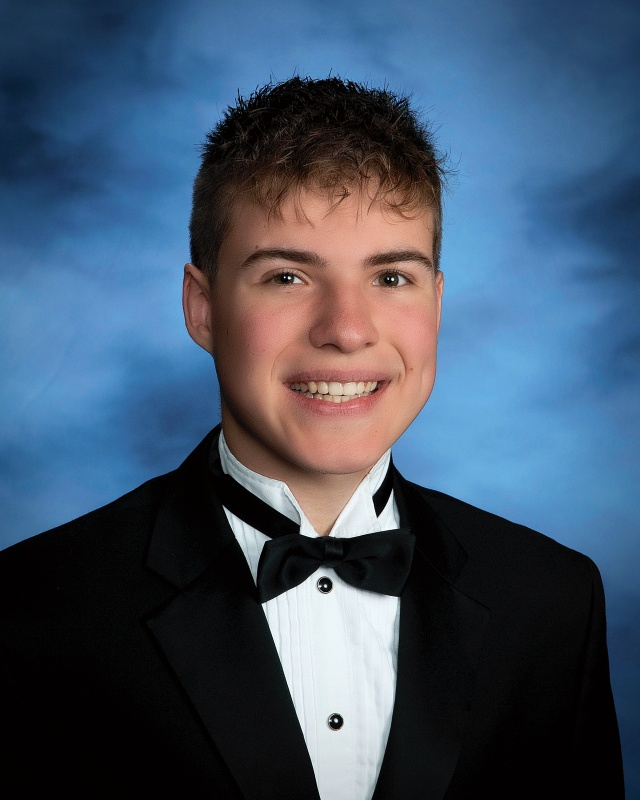

About
Hello! I am Jadon Brutcher, a current student at Rose-Hulman Institute of Technology, studying software engineering and data science. I am realy interested in data and the potential it has to change the world. I have done several projects on Machine Learning and Artificial Inteligence, and I hope that in my future career I can use data to help make decisions that will impact many people in a positive way. Besides my interest in data science, I also have experience developing software, with projects such as simulations, games, and graph-search algorithms. After Rose-Hulman, I hope to attend a graduate program for Data Science and Information Technology, as well as pursue degrees in Economics, Psychology, and Statistics.
Some more personal facts about me include: I own a cat named B, I like to play video games, listen to music, trade on the stock market, watch movies, and I'm really interested in blockchain and cryptocurrency technology. I was born and raised in Indiana, and right behind my house is a cornfield. My favorite color is orange, and some of my favorite foods include spaghetti, popcorn, and eggs benedict. My favorite TV show is Peaky Blinders, and my favorite movie(s) are The Lord of the Rings trilogy. On the portfolio page are some projects I've done, and the resume page has my current resume.